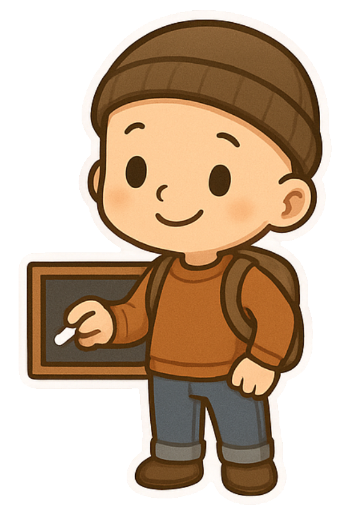

No hay resultados
Prueba con otro término de búsqueda o cambia el filtro.
Cápsulas informativas portable para aprender haciendo: cada guía es un único archivo HTML que funciona en cualquier navegador, sin servidores, sin instalaciones y sin dependencias. Elige tu etapa, entra por el bloque que te toca y sigue la secuencia.

"Aprender haciendo,
no solo leyendo."
El conocimiento es un derecho fundamental, no un privilegio. Estas guías nacen de esa convicción: cada una es una cápsula informativa portable — un archivo HTML que carga consigo todo lo necesario para funcionar sin servidores, sin instalaciones, sin dependencias.
Las guías de módulo van en orden: cada una enlaza con la anterior y con la siguiente, y al final de cada una tienes el bloque «Sigue tu ruta».
Por bloque
Por etapa
Mostrando 40 de 40 guías
Prueba con otro término de búsqueda o cambia el filtro.